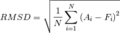
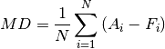
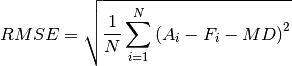

Validation¶
Validation methodology¶
In this section, a force field is constructed using the current version
of QuickFF (i.e. 2.2.2), after which it is tested and evaluated for its
ability to reproduce the ab initio input it was fitted to. The force field was
constructed using the QuickFF script qff.py. The
required ab initio input is contained in the file gaussian.fchk and the
electrostatic partitioning in gaussian_mbis.h5. The Yaff parameter file for
the electrostatic contribution is generated using
qff-input-ei.py -f –ffatypes=low –gaussian gaussian.fchk gaussian_mbis.h5:charges pars_ei_mbisgauss.txt
The config file containing the settings that are used for the force field is
given by config.txt and can be viewed below. Furthermore, all required input
files as well as the generated output can be found in the directory
share/validation.
#IO
fn_yaff : pars_cov.txt
fn_charmm22_prm : None
fn_charmm22_psf : None
fn_sys : system.chk
plot_traj : final
xyz_traj : False
fn_traj : None
log_level : medium
log_file : None
#Program
program_mode : DeriveFF
#FF config
only_traj : PT_ALL
ffatypes : low
ei : pars_ei_mbisgauss.txt
ei_rcut : None #default is 20 (periodic) or 50 (non-per) A
vdw : None
vdw_rcut : 20*angstrom
covres : None
excl_bonds : None
excl_bends : None
excl_dihs : None
excl_oopds : None
do_hess_mass_weighting : True
do_hess_negfreq_proj : False
do_cross_svd : True
pert_traj_tol : 1e-9
cross_svd_rcond : 1e-9
do_bonds : True
do_bends : True
do_dihedrals : True
do_oops : True
do_cross_ASS : True
do_cross_ASA : True
do_cross_DSS : False
do_cross_DSD : False
do_cross_DAA : False
do_cross_DAD : False
bond_term : BondHarm
bend_term : BendAHarm
do_squarebend : True
do_bendclin : True
do_sqoopdist_to_oopdist : True
To evaluate the performance of the force field, it is applied to perform a basic geometry optimization followed by a normal mode analysis using Yaff and TAMkin. Finally, two validations are performed for each system:
the force field energy is compared to the ab initio energy along the perturbation trajectories that were constructed by QuickFF.
the geometry (i.e. bond lengths, bending angles, dihedral angles and ut-of-plane distances) and normal mode frequencies as predicted by the force field are compared with the given ab initio input. To this end, the following statistics are used:
Root Mean Square Deviation (RMSD)

Mean Deviation (RMSD)

Root Mean Square Error (RMSE)

These statistics satisfy the condition .
Validation 1 - Water¶
Force field construction¶
Averaged Atomic Charges:
------------------------
H 0.451 +- 0.000 (N=2)
O -0.901 +- 0.000 (N=1)
#Fixed charges
#---------------
FIXQ:UNIT Q0 e
FIXQ:UNIT P e
FIXQ:UNIT R angstrom
FIXQ:SCALE 1 1.0
FIXQ:SCALE 2 1.0
FIXQ:SCALE 3 1.0
FIXQ:DIELECTRIC 1.0
# Atomic parameters
# ----------------------------------------------------
# KEY label Q_0A R_A
# ----------------------------------------------------
FIXQ:ATOM H 0.4506107006 0.7308000000
FIXQ:ATOM O -0.9012712115 1.1325000000
Traceback (most recent call last):
File "/home/louis/build/anaconda3/bin/qff.py", line 38, in <module>
qff()
File "/home/louis/build/anaconda3/lib/python3.6/site-packages/quickff/scripts.py", line 348, in qff
settings = Settings(fn=args.config_file, **kwargs)
File "/home/louis/build/anaconda3/lib/python3.6/site-packages/quickff/settings.py", line 177, in __init__
self.check()
File "/home/louis/build/anaconda3/lib/python3.6/site-packages/quickff/settings.py", line 241, in check
check_function(key,value)
File "/home/louis/build/anaconda3/lib/python3.6/site-packages/quickff/settings.py", line 83, in is_nonexisting_file_name
raise IOError('Setting for key %s should be non-existing file name, got %s which already exists.' %(key, value))
OSError: Setting for key fn_yaff should be non-existing file name, got pars_cov.txt which already exists.
# BONDHARM
#---------
BONDHARM:UNIT K kjmol/A**2
BONDHARM:UNIT R0 A
BONDHARM:PARS H O 4.9793007398e+03 9.7671602900e-01
# BENDAHARM
#----------
BENDAHARM:UNIT K kjmol/rad**2
BENDAHARM:UNIT THETA0 deg
BENDAHARM:PARS H O H 3.4652118756e+02 9.5532795842e+01
# Cross
#------
Cross:UNIT KSS kjmol/angstrom**2
Cross:UNIT KBS0 kjmol/(angstrom*rad)
Cross:UNIT KBS1 kjmol/(angstrom*rad)
Cross:UNIT R0 angstrom
Cross:UNIT R1 angstrom
Cross:UNIT THETA0 deg
Cross:PARS H O H -1.1006640167e+02 1.4564327376e+02 1.4564327376e+02 9.7199818096e-01 9.7199818096e-01 9.6002094143e+01
Force field evaluation¶
Perturbation trajectories¶
The figures below illustrate the reproduction of the ab initio energy along the constructed perturbation trajectories. For water, there are 3 such trajectories, two bonds and one bend.
- First O-H bond:

- Second O-H bond:

- H-O-H bend:

Geometry and frequencies¶
OBSERVABLE [UNIT] | RMSD | MD | RMSE
--------------------|----------------|----------------|----------------
| | |
GEOMETRY | | |
Bonds [A] | 7.214e-05 | -7.214e-05 | 0.000e+00
Bends [deg] | 5.485e-02 | 5.485e-02 | 0.000e+00
Dihedrals [deg] | - | - | -
Opdists [A] | - | - | -
| | |
FREQUENCIES [1/cm] | | |
All | 7.656e-02 | -2.408e-02 | 7.267e-02
0 - 100 | - | - | -
100 - 500 | - | - | -
500 - 1000 | - | - | -
1000 - 3000 ( 1) | 7.841e-02 | 7.841e-02 | 0.000e+00
3000 - inf ( 2) | 7.561e-02 | -7.533e-02 | 6.554e-03
Validation 2 - Benzene¶
Force field construction¶
Averaged Atomic Charges:
------------------------
H 0.131 +- 0.000 (N=6)
C -0.132 +- 0.001 (N=6)
#Fixed charges
#---------------
FIXQ:UNIT Q0 e
FIXQ:UNIT P e
FIXQ:UNIT R angstrom
FIXQ:SCALE 1 1.0
FIXQ:SCALE 2 1.0
FIXQ:SCALE 3 1.0
FIXQ:DIELECTRIC 1.0
# Atomic parameters
# ----------------------------------------------------
# KEY label Q_0A R_A
# ----------------------------------------------------
FIXQ:ATOM H 0.1314377213 0.7308000000
FIXQ:ATOM C -0.1315514661 1.1703000000
Traceback (most recent call last):
File "/home/louis/build/anaconda3/bin/qff.py", line 38, in <module>
qff()
File "/home/louis/build/anaconda3/lib/python3.6/site-packages/quickff/scripts.py", line 348, in qff
settings = Settings(fn=args.config_file, **kwargs)
File "/home/louis/build/anaconda3/lib/python3.6/site-packages/quickff/settings.py", line 177, in __init__
self.check()
File "/home/louis/build/anaconda3/lib/python3.6/site-packages/quickff/settings.py", line 241, in check
check_function(key,value)
File "/home/louis/build/anaconda3/lib/python3.6/site-packages/quickff/settings.py", line 83, in is_nonexisting_file_name
raise IOError('Setting for key %s should be non-existing file name, got %s which already exists.' %(key, value))
OSError: Setting for key fn_yaff should be non-existing file name, got pars_cov.txt which already exists.
# BONDHARM
#---------
BONDHARM:UNIT K kjmol/A**2
BONDHARM:UNIT R0 A
BONDHARM:PARS C H 3.3330947124e+03 1.0876030745e+00
BONDHARM:PARS C C 3.9651509045e+03 1.3940024805e+00
# BENDAHARM
#----------
BENDAHARM:UNIT K kjmol/rad**2
BENDAHARM:UNIT THETA0 deg
BENDAHARM:PARS C C H 3.2097791113e+02 1.2015408782e+02
BENDAHARM:PARS C C C 6.0195050467e+02 1.1997128609e+02
# TORSION
#--------
TORSION:UNIT A kjmol
TORSION:UNIT PHI0 deg
TORSION:PARS C C C H 2 3.1428590360e+01 0.0000000000e+00
TORSION:PARS C C C C 2 3.5982597089e+01 0.0000000000e+00
TORSION:PARS H C C H 2 1.6841711541e+01 0.0000000000e+00
# OOPDIST
#--------
OOPDIST:UNIT K kjmol/A**2
OOPDIST:UNIT D0 A
OOPDIST:PARS C C H C 1.6627860940e+02 4.7922360401e-17
# Cross
#------
Cross:UNIT KSS kjmol/angstrom**2
Cross:UNIT KBS0 kjmol/(angstrom*rad)
Cross:UNIT KBS1 kjmol/(angstrom*rad)
Cross:UNIT R0 angstrom
Cross:UNIT R1 angstrom
Cross:UNIT THETA0 deg
Cross:PARS C C H 4.0314251669e+01 1.1314941462e+02 1.3908937843e+02 1.3934733019e+00 1.0875970644e+00 1.2001586285e+02
Cross:PARS C C C 5.2510965130e+02 4.9272462224e+01 4.9272462224e+01 1.3934733019e+00 1.3934733019e+00 1.2003594733e+02
Force field evaluation¶
Perturbation trajectories¶
The figures below illustrate the reproduction of the ab initio energy along the constructed perturbation trajectories. For water, there are 3 such trajectories, two bonds and one bend.
- C-H bonds:


- C-C bonds:


- C-C-C bends:


- C-C-H bends:


- C-C-H-C out-of-plane distances:


Geometry and frequencies¶
OBSERVABLE [UNIT] | RMSD | MD | RMSE
--------------------|----------------|----------------|----------------
| | |
GEOMETRY | | |
Bonds [A] | 3.530e-04 | -2.392e-04 | 2.596e-04
Bends [deg] | 9.492e-08 | 6.316e-15 | 9.492e-08
Dihedrals [deg] | 5.371e-16 | 1.643e-32 | 5.371e-16
Opdists [A] | 5.587e-18 | 4.747e-18 | 2.947e-18
| | |
FREQUENCIES [1/cm] | | |
All | 2.338e+01 | 1.057e+00 | 2.335e+01
0 - 100 | - | - | -
100 - 500 ( 2) | 1.701e+01 | 1.700e+01 | 4.160e-01
500 - 1000 ( 8) | 1.470e+01 | -6.089e+00 | 1.338e+01
1000 - 3000 ( 14) | 3.163e+01 | 3.301e+00 | 3.146e+01
3000 - inf ( 6) | 3.739e+00 | 3.573e-02 | 3.739e+00